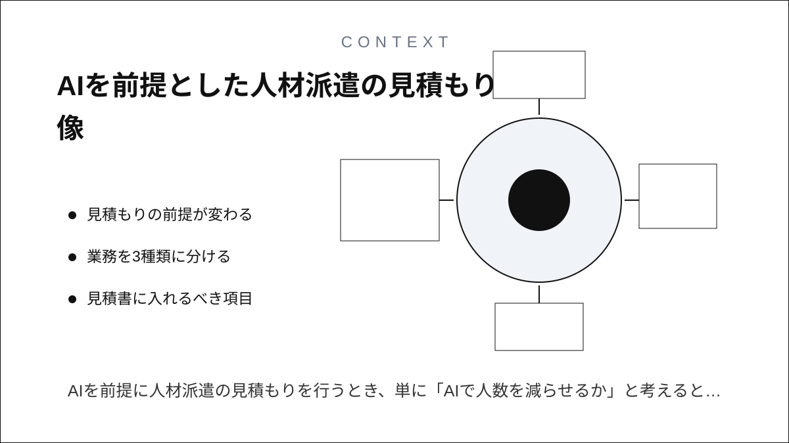
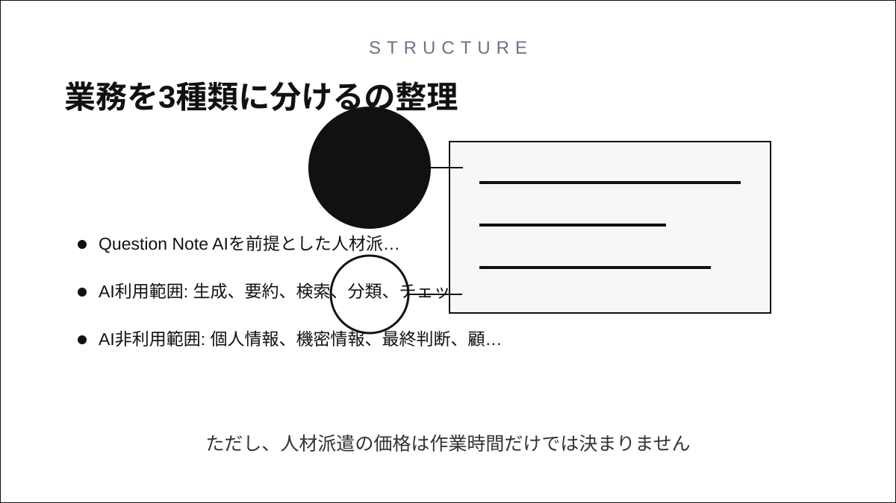
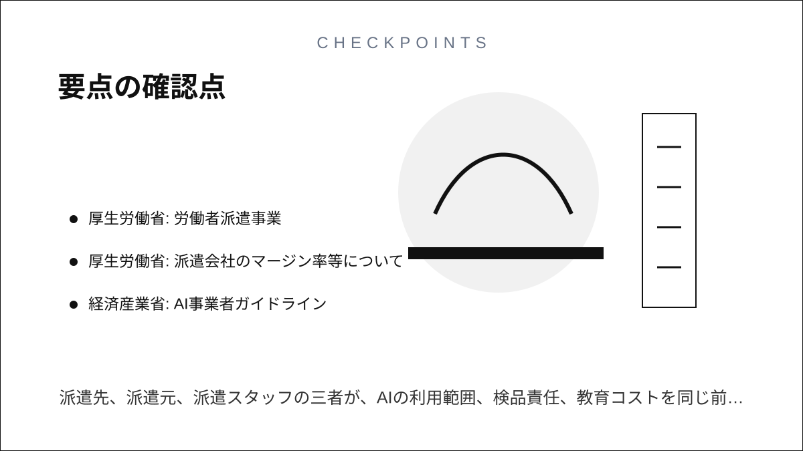

Question Note
AIを前提とした人材派遣の見積もり

AIを前提に人材派遣の見積もりを行うとき、単に「AIで人数を減らせるか」と考えると危険です。 実務では、業務の分解、AIで短縮できる作業、人が負う責任、品質保証と教育のコストを 分けて見積もる必要があります。

見積もりの前提が変わる
従来の見積もりは「必要人数 × 時間単価 × 期間」に寄りがちでした。 しかしAIを使う現場では、同じ1名でも成果量が変わります。一方で、AIの出力確認、プロンプト設計、 情報漏えい防止、誤回答の検知、社内ルール整備といった作業も増えます。
そのため、現代的な見積もりは「AIを使うから安い」ではなく、 AIで削れる時間と、AIを安全に使うために増える時間を両方出す形にするのが現実的です。
業務を3種類に分ける
| 分類 | AIで変わること | 見積もり上の扱い |
|---|---|---|
| 定型処理 | 文章作成、要約、分類、一次チェックなどは短縮しやすい。 | 処理件数あたりの時間を下げて見積もる。ただし検品時間を残す。 |
| 判断業務 | 候補案の生成や論点整理は支援できるが、最終判断は人が持つ。 | 人のスキル単価を維持し、AIは補助ツールとして扱う。 |
| 例外対応 | 前例が少ない問い合わせ、顧客折衝、法務・労務判断は人への依存が高い。 | 削減率を小さく置き、リスク対応余力を見込む。 |
見積書に入れるべき項目
- 対象業務: どの作業を派遣スタッフが行うか
- AI利用範囲: 生成、要約、検索、分類、チェックなどのどこに使うか
- AI非利用範囲: 個人情報、機密情報、最終判断、顧客説明などの制限
- 検品方法: AI出力を誰が、どの基準で確認するか
- 教育時間: 派遣スタッフへの業務教育とAI利用ルール教育
- 成果指標: 時間、件数、正確性、差し戻し率、顧客満足など
価格の考え方
AIがあるほど、単純な作業時間は下がる可能性があります。ただし、人材派遣の価格は作業時間だけでは決まりません。 厚生労働省は派遣料金や賃金、教育訓練、福利厚生などを含むマージン率情報の公開を求めており、 価格を見る側も単にマージン率の低さだけで判断しないことが重要です。
つまりAI時代の見積もりでは、派遣先に対して 「人の稼働」「AI利用環境」「品質保証」「教育・管理」を分解して提示する方が透明です。
実務で使える見積もり式
見積額 =
人の稼働時間 × 職種別単価
+ AI利用・運用に必要な管理時間
+ 教育・オンボーディング時間
+ 検品・品質保証時間
+ リスク対応の予備工数AIによる削減率は全体に一律で掛けない方が安全です。 定型処理、判断業務、例外対応に分けて、作業ごとに削減率を置く方が説明しやすくなります。
注意点
- AI利用の有無で、派遣スタッフに求めるスキルが変わる。
- AIが出した内容の責任者を曖昧にしない。
- 個人情報や機密情報をAIに入力してよいかを契約前に決める。
- 「AI込み単価」を作る場合も、教育・検品・管理の内訳を隠さない。
- AIによる成果量の改善を約束するなら、測定方法と除外条件を明記する。
要点
AIを前提とした人材派遣の見積もりは、人数を減らす交渉ではなく、 人が担う責任とAIが支援する作業を再設計する作業です。 派遣先、派遣元、派遣スタッフの三者が、AIの利用範囲、検品責任、教育コストを同じ前提で見られる 見積書にすることが重要です。
